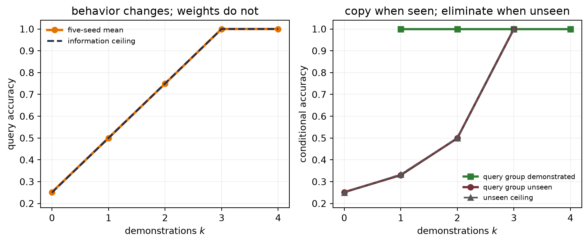

Chapter 9 left us a transfer rule: importing a representation is most promising when labels are scarce, the target is feature-hungry, and the source supplies useful coverage at a matched scale. Chapter 15 showed the conventional next step—fine-tuning changes every encoder weight. Chapter 16 then planted a second warning: training-optimal is not serving-optimal. Chinchilla’s allocation can spend a pretraining budget well while leaving us with a backbone that is expensive to copy, update, or store once per downstream task.
Let us put those promises on one ledger. A pretrained model creates three different bills:
the backbone storage—a base shared across tasks, or a full task-specific copy when sharing is abandoned;
the incremental task state—the prompt, adapter, or unmerged delta that makes one task different from another; and
the transient work—context tokens, activations, gradients, optimizer state, and caches needed while adapting or running the model.
These bills are related—but they are not interchangeable. Freezing a billion weights removes their gradients—it does not make the billion weights disappear. Packing each weight into fewer bits reduces a storage lower bound—it does not prove that a particular kernel will run faster. Adding demonstrations changes no weight—it still lengthens the sequence the model must process. A merged LoRA or fully tuned checkpoint can collapse base and delta into one artifact—but then each task carries a full backbone-sized copy instead of sharing the original.
The useful organizing questions are therefore not simply “How many parameters?” They are where does task-specific information live, and which object does the method change? Hard prompts and retrieved documents place task information in context. Parameter-efficient fine-tuning (PEFT) places it in a restricted set of learned values. Quantization need not add task information at all—it changes the numerical representation of a base or adapter. QLoRA composes the last two—it is not a fourth kind of objective.
Figure code: separate the changed object from the three resource bills
Figure 17.1: Three levers act on three different objects. Prompting changes the context presented to a fixed model; PEFT permits a small learned state to receive gradient blame; quantization changes how fixed values are represented. QLoRA combines a quantized frozen base with a trainable low-rank branch. The separate cost ledger below is deliberately not column-matched: every lever can affect more than one bill, and none removes all backbone storage or transient work.
17.1 Prompting: move evidence into context
A decoder in Chapter 14 already defines a conditional distribution over the next token. Prompting changes the prefix on which that fixed distribution is conditioned. For an instruction \(I\), demonstrations \((x_i,y_i)\), and a query \(x_\star\)—a discrete prompted prediction can be written
With no demonstrations, this is zero-shot prompting. With a few, it is few-shot prompting; when the model uses those examples to infer the task inside its forward computation, we call the behavior in-context learning (ICL). The word learning names a behavioral change with context—not a checkpoint update.
Brown and colleagues found that few-shot gains often grew with model scale in GPT-3—but that is an empirical result over particular models and tasks. It does not establish universal parameter thresholds, nor does it settle the mechanism by which a Transformer uses demonstrations. Attention makes earlier examples visible and routable; saying it literally “performs analogy” would outrun the evidence. Prompt order, label words, formatting, and example choice can all matter.
Instructions that ask for intermediate steps can improve some multi-step tasks. Those visible steps are generated tokens, however—not a guaranteed faithful window into the model’s internal computation. The same logits and decoding cautions from Chapter 11 still apply.
NotePrompting is not prompt tuning
A hard prompt is a sequence of ordinary token IDs chosen by a person or program. It receives no gradient. Prompt tuning, introduced later in this chapter, learns continuous vectors by backpropagation and is therefore a PEFT method. Similar names do not mean the same training procedure.
Zero trainable parameters is not zero cost—demonstrations consume context length. They increase prefill work, the initial forward pass that processes the supplied prefix, and occupy entries in the key/value (KV) cache, the stored attention keys and values reused while autoregressively generating later tokens. They also expose task data at inference time. Prompting trades a new checkpoint for a longer, more carefully constructed input.
A frozen-context mechanism test
Can a fixed network genuinely change its answer because examples in the prompt reveal a task? We can test that mechanism without claiming to reproduce natural-language ICL.
Each synthetic episode secretly permutes four group symbols onto four label symbols. A demonstration reveals one group–label pair; demo groups are distinct. A two-shot prompt might read [BOS] group C, label A; group A, label D; [QUERY] group A, whose target is label D. The query asks for another group’s label. A tiny causal Transformer is meta-trained across many such episodes, cycling through one to four demonstrations. During evaluation, it receives a new random mapping and no parameter update.
The information ceiling is known before training. With \(k<4\) demonstrations, the query is already covered with probability \(k/4\). Otherwise, its label is uniform among the \(4-k\) unused labels. Therefore
At \(k=3\), even an unseen query group is solvable by elimination—a distinction that will tell us whether the model merely copies a seen pair or uses the whole mapping.
The code uses nn.TransformerEncoderLayer as a compact container for the same pre-LayerNorm attention–residual–FFN structural pattern built from first principles in Chapter 14. Its GELU choice differs from that chapter’s teaching block; the wrapper does not hide the causal or padding masks, embeddings, or classifier. Token IDs have shape \([B,11]\), hidden states \([B,11,48]\), and the query logits \([B,4]\).
Code: meta-train a tiny causal Transformer, then audit frozen-weight in-context adaptation over five seeds
model parameters: 39,268
k mean accuracy seed sd information ceiling
0 0.252 0.003 0.25
1 0.500 0.005 0.50
2 0.749 0.002 0.75
3 1.000 0.000 1.00
4 1.000 0.000 1.00
all evaluation passes left weights unchanged: True
Figure code: compare frozen-context accuracy with the analytic ceiling and the seen-versus-unseen decomposition
fig, axes = plt.subplots(1, 2, figsize=(9, 3.8))ks = np.arange(5)for seed_row in context_accuracy: axes[0].plot(ks, seed_row, color="#A7ABB4", lw=1.1, alpha=0.75)axes[0].plot(ks, context_accuracy.mean(axis=0), "o-", color=orange, lw=2.6, label="five-seed mean")axes[0].plot(ks, context_ceiling, "--", color=navy, lw=2, label="information ceiling")axes[0].set(xlabel="demonstrations $k$", ylabel="query accuracy", title="behavior changes; weights do not", ylim=(0.18, 1.04))axes[0].set_xticks(ks)axes[0].legend(frameon=False, fontsize=8)covered_mean = np.array([ np.mean([run["rows"][k]["covered"] for run in context_runs])for k inrange(1, 5)])uncovered_mean = np.array([ np.mean([run["rows"][k]["uncovered"] for run in context_runs])for k inrange(4)])axes[1].plot(np.arange(1, 5), covered_mean, "s-", color=green, lw=2.4, label="query group demonstrated")axes[1].plot(np.arange(4), uncovered_mean, "o-", color=wine, lw=2.4, label="query group unseen")axes[1].plot(np.arange(4), [1/4, 1/3, 1/2, 1], "^--", color="#555555", lw=1.7, label="unseen ceiling")axes[1].set(xlabel="demonstrations $k$", ylabel="conditional accuracy", title="copy when seen; eliminate when unseen", ylim=(0.18, 1.04))axes[1].set_xticks(ks)axes[1].legend(frameon=False, fontsize=7.6, loc="lower right")for ax in axes: ax.grid(alpha=0.18)plt.tight_layout()plt.show()

Figure 17.2: A frozen model changes behavior as demonstrations reveal an episode’s hidden label mapping. Across five independently trained seeds, overall accuracy (left) tracks the exact information ceiling. Conditional accuracy (right) is perfect when the query group appeared; for unseen groups it follows the shrinking set of unused labels and reaches 1 at three demonstrations by elimination. Evaluation uses one nested episode bank per seed, and every parameter is bitwise unchanged across all five context lengths.
The 39,268-parameter network lands at mean accuracies \(0.252,0.500,0.749,1.000,1.000\) for \(k=0,1,2,3,4\), respectively. The analytic ceilings are \(0.25,0.50,0.75,1,1\). More revealingly, unseen-query accuracy rises from \(0.252\) to \(0.330\), \(0.499\), and \(1.000\). The model is not only copying a matching demonstration; at \(k=3\) it identifies the remaining label.
WarningAn existence proof in a designed regime
The model was meta-trained on exactly this family of random permutation tasks. The study demonstrates that a frozen causal Transformer can use prompt evidence in this controlled distribution. It does not estimate natural-language ICL quality, explain the mechanism inside a large language model, or show that more examples always help. Across runs, initialization, meta-training episodes, and the finite 8,192-episode evaluation bank all change. The seed SD therefore measures combined run-to-run repeatability—not task or domain diversity, and not optimization alone.
Retrieval is another context lever
A prompt can contain information selected at query time rather than written by hand. Retrieval-augmented generation (RAG) first searches an external corpus, then places retrieved passages beside the instruction and query before generation. The generator’s weights may remain fixed—the task-specific state lives partly in the index and partly in the retrieved context.
This reconnects to Chapter 12. A retriever computes query–document similarities, selects neighbors, and hands their content to a downstream weighted computation. Modern systems can learn the retriever, the generator, or both, but the basic context-augmentation move is distinct from PEFT.
Retrieval moves rather than abolishes failure—a missed document cannot support the answer; a highly ranked irrelevant passage can distract it; retrieved text can contain malicious instructions; and a plausible citation does not prove that the generated claim follows from the cited evidence. RAG is attractive when facts change faster than checkpoints or when provenance matters, but it is a pipeline whose retrieval and generation stages must be evaluated separately.
17.2 What if the prompt itself were learnable?
Hard prompts spend human effort and context tokens. The chapter’s familiar refrain now applies: what if the prompt itself were learnable? Let \(\matr{P}\in\mathbb{R}^{m\times d}\) be \(m\) continuous vectors with the same width as token embeddings. For an \(n\)-token input, define \(\operatorname{Embed}(x)\in\mathbb{R}^{n\times d}\). Prompt tuning prepends the learned rows,
while freezing \(\theta_0\). Before any task head, the learned state contains exactly \(md\) values. Those values are not words—and need not be nearest to any vocabulary embedding. They are virtual tokens optimized by gradient descent, and they still occupy \(m\) virtual sequence positions during use.
Prefix tuning moves a related idea deeper. At every Transformer layer \(\ell\), let the ordinary keys and values be \(\matr{K}_\ell,\matr{V}_\ell\in\mathbb{R}^{n\times d}\) and the learned prefixes be \(\matr{P}^K_\ell,\matr{P}^V_\ell\in\mathbb{R}^{m\times d}\). The prefix rows extend the ordinary keys and values:
A direct implementation with \(m\) prefix slots, width \(d\), and \(L\) layers stores \(2Lmd\) values, although practical parameterizations can differ. Li and Liang used an auxiliary network during optimization—then retained only the learned prefix for inference. Lester and colleagues found that prompt tuning approached full tuning as T5 scale grew in their SuperGLUE study; that result is not a universal size threshold.
Two other PEFT families complete the map. Adapters insert a small bottleneck inside each frozen Transformer block. For bottleneck width \(d_b\), let \(\matr{W}_{\mathrm{down}}\in\mathbb{R}^{d_b\times d}\), \(\vect{b}_{\mathrm{down}}\in\mathbb{R}^{d_b}\), \(\matr{W}_{\mathrm{up}}\in\mathbb{R}^{d\times d_b}\), and \(\vect{b}_{\mathrm{up}}\in\mathbb{R}^{d}\). One common residual form is
This module adds \(2dd_b+d+d_b\) parameters. BitFit takes the selective-update idea to an extreme—freeze pretrained weight matrices and update their existing bias terms. The original BitFit classification experiments also trained the task-specific output layer; “bias-only” describes the restriction inside the pretrained backbone. Neither method promises the same accuracy on every task. They are different restrictions on where gradient blame may write.
17.3 LoRA: a low-rank correction beside a frozen path
Full fine-tuning learns an unrestricted correction \(\Delta\matr{W}\) with \(d_{\mathrm{out}}d_{\mathrm{in}}\) values. Low-Rank Adaptation (LoRA) instead constrains the correction to a product of two thin matrices:
\(\matr{A}\) compresses to \(r\) coordinates and \(\matr{B}\) expands back to the output width. Because \(\operatorname{rank}(\matr{B}\matr{A})\le r\), task updates can use at most \(r\) independent linear directions in that matrix. The merged matrix is not therefore rank \(r\)—the constraint applies only to the correction.
For one \(4096\times4096\) map and \(r=16\), full tuning exposes 16,777,216 values; LoRA exposes \(16(4096+4096)=131{,}072\), or \(0.78125\%\). A model-level percentage requires summing Equation 17.6 over the matrices actually targeted. The original LoRA experiments emphasized query and value projections—later recipes often target different or more numerous matrices. “Rank 16” alone does not specify an adapter’s size.
Figure code: draw the frozen path, trainable low-rank branch, and merge identity
Figure 17.3: LoRA adds a trainable low-rank branch beside a frozen linear map. Gradient blame flows through both computational paths, but only A and B receive updates. Initializing A randomly and B to zero begins with an exact zero correction while leaving a nonzero first gradient for B; after training, the correction can be merged into a compatible base weight.
The usual initialization samples \(\matr{A}\) and sets \(\matr{B}=0\). The initial correction is then exactly zero—yet \(\matr{B}\) can receive a gradient because \(\matr{A}\vect{x}\) is generally nonzero. Setting both factors to zero would block both first gradients. The scale \(\alpha/r\) separates a chosen adapter strength from rank, but its best value remains a tuning decision.
Once trained, a single compatible adapter can be merged:
Merged and unmerged arithmetic should agree to numerical tolerance. Only the merged form removes the extra branch at inference. Dynamic adapter switching, keeping many adapters active, or combining LoRA with a quantized base changes that systems story; a quantized merge generally requires dequantization and requantization.
TipA four-part freeze audit
Count trainable values; assert the base tensor is bitwise unchanged; inspect that only permitted parameters receive gradients; and compare merged with unmerged outputs. A small checkpoint is not evidence that the intended tensors were frozen. The assertions belong beside the implementation, not in a comment after training.
Make the rank bottleneck fail on purpose
Low rank is a hypothesis about the update—not a free compression theorem. We can make its boundary visible by planting a target correction with exactly six independent diagonal directions. The frozen base is a \(32\times32\) map. Full tuning may move all 1,024 entries; LoRA may use ranks \(1,2,4,6,\) or \(8\). Inputs are fixed Gaussian vectors, targets are noiseless, and five LoRA initializations see the same problem and optimizer schedule.
Write the six planted magnitudes as \(\sigma_1\ge\cdots\ge\sigma_6\). Their values are \(1.20,0.90,0.65,0.40,0.22,0.10\). A rank-\(r\) correction below six must leave some directions behind. This design deliberately favors the LoRA assumption—that is what makes the capacity claim falsifiable before we run it.
Because the six diagonal basis directions are mutually orthogonal, their squared correction energy is \(\sum_{j=1}^{6}\sigma_j^2\). A rank-\(r\) correction can retain at most \(r\) independent directions; spending them on the \(r\) largest magnitudes leaves the concrete relative floor
Figure 17.4: LoRA’s rank is a real capacity constraint in a problem constructed to expose it. Five factor initializations converge to the same rank-limited relative update errors (left), closely tracking the analytic best floors from the planted diagonal magnitudes. Validation error (right) falls sharply but remains nonzero below the planted rank six; rank six, rank eight, and the unrestricted full update reach numerical zero. Counts label trainable adapter values in this deliberately small layer.
The failure is orderly. Rank 1 leaves relative correction error \(0.710\); rank 2 leaves \(0.472\); rank 4 leaves \(0.142\). Their mean validation MSEs are \(0.04535,0.02022,\) and \(0.001888\). Rank 6 and rank 8 recover the target to below \(10^{-7}\) relative correction error. The unrestricted update reaches numerical-zero validation MSE and \(2.39\times10^{-7}\) relative correction error. Every frozen base is bitwise intact, and the largest merged–unmerged discrepancy is below \(2\times10^{-6}\).
In this toy \(32\times32\) layer, rank 6 still trains 384 values—37.5% of a full matrix. The point is inspectability, not an impressive compression ratio. Real LoRA savings depend on wide matrices, small ranks, and which layers are targeted. Likewise, the experiment was built from a low-rank shift—a task whose useful correction is not well captured at the chosen rank will retain error no matter how fashionable the adapter is.
17.4 Quantization: put weights on a smaller grid
PEFT restricts which values may change. Quantization asks how precisely values must be represented. If a tensor contains \(N\) values stored at \(b\) bits each, its ideal packed payload is
One billion FP16 weights therefore require 2 GB in decimal units; an ideal packed 4-bit payload requires 0.5 GB. Those are weight-payload lower bounds—not complete checkpoints or working-memory forecasts. Scales, zero-points, unquantized tensors, packing alignment, activations, and caches remain.
This is where a tensor’s dtype becomes more than a software label. Appendix B will gather dtype, shape, stride, and physical layout in one place; Appendix D will connect FP16, BF16, rounding, and mixed precision to the finite representations first encountered in Chapter 5. Here we need one narrower fact—fewer nominal bits change both representable values and storage arithmetic.
Start with signed symmetric uniform quantization of a real-valued tensor \(\matr{W}\). For \(b\) bits, let
\(s\) is the distance between adjacent real-valued grid points. This symmetric choice uses codes \(-Q,\ldots,Q\): \(2^b-1\) levels, leaving the most-negative two’s-complement code unused so the endpoints remain balanced around zero. With the maximum used for calibration, values are not clipped beyond the selected range; nearest rounding gives \(|W_{ij}-\widehat W_{ij}|\le s/2\). One extreme value increases \(s\) for everything sharing that scale, so small values may all round to zero.
If every value is zero, choose any positive sentinel scale—say \(s=1\)—and store zero codes. A constant affine range likewise needs a separately defined convention; the range formula below otherwise divides by zero.
An affine grid also stores an integer zero-point \(z\):
The zero-point lives in integer-code coordinates. Mixing it with a real-valued offset—subtracting \(z\) before dividing by \(s\), then adding \(z\) after dequantization—is a units error.
One scale can erase a quiet channel
Scale granularity changes the trade—per-tensor quantization shares one scale across an entire matrix. Per-row quantization gives each output row its own scale; for a linear layer this is often called per-output-channel quantization. More scales cost metadata, but a large row no longer sets the grid spacing for a small row.
The next audit creates a \(64\times256\) weight matrix whose row ranges span \(0.01\) to \(10\). It compares 8-bit and 4-bit symmetric grids, either global or per-row, on 4,096 fixed Gaussian inputs. The code reports relative weight error, relative layer-output error, the distribution of row errors, and ideal packed payload plus FP32 scale metadata. It reports no runtime—the simple Python arithmetic is not a quantized production kernel.
Code: compare per-tensor and per-row symmetric quantization, including output error and metadata
Figure 17.5: Quantization is a grid plus a granularity decision. A 3-bit symmetric example (left) rounds real values to seven levels. In the unequal-row audit, per-row scales reduce relative layer-output error at both bit widths (center). At 8 bits, the global scale entirely erases the smallest rows—relative error 1—while per-row error stays near 0.7% across ranges (right). The improvement costs 256 rather than 4 bytes of FP32 scale metadata.
The global 8-bit grid has only \(2.13\%\) relative output error overall, which sounds reassuring until we inspect rows—the median relative row error is \(22.13\%\), and the quietest rows are reconstructed as all zeros. Per-row scales lower overall output error to \(0.689\%\) and maximum row error below \(0.964\%\). At 4 bits, per-row scales improve output error from \(26.95\%\) to \(12.23\%\), but do not make the approximation exact.
The packed 4-bit codes require 8,192 bytes. One FP32 scale brings the global total to 8,196 bytes; 64 row scales bring it to 8,448. The live torch.int8 tensor in this teaching cell occupies one byte per code—it is not physically packed into nibbles. Equation 17.9 is the payload a packing format could achieve.
WarningA smaller checkpoint is not automatically faster
Bit count does not determine latency by itself. Real speed depends on supported kernels, hardware, packing, dequantization, memory bandwidth, batch shape, and which tensors remain in higher precision. Dettmers and colleagues even reported cases where LLM.int8() overhead made smaller models slower than FP16. Measure the target system; do not turn a file-size ratio into a runtime claim.
What a quantization workflow protects
Post-training quantization (PTQ) chooses a representation after the base model has trained. It may use calibration inputs, but it does not run ordinary end-to-end training again. Our uniform audit used only weight ranges. More sophisticated PTQ methods protect behavior measured on calibration data. For a layer \(\matr{W}\in\mathbb{R}^{d_{\mathrm{out}}\times d_{\mathrm{in}}}\) and \(n\) calibration activations \(\matr{X}\in\mathbb{R}^{d_{\mathrm{in}}\times n}\), GPTQ frames a layerwise weight-only problem as
where \(\widetilde{\matr{W}}\) has the same shape as \(\matr{W}\) and \(\mathcal{Q}\) is the chosen quantized set. The objective protects layer outputs—not ordinary weight MSE and not the original task loss. AWQ uses activation evidence to choose channel scaling that protects salient weights. These methods make the calibration distribution part of the result.
Quantization-aware training (QAT) instead inserts fake quantize–dequantize operations into the forward pass while retaining higher-precision shadow weights for optimization. Because rounding is nondifferentiable, training uses a surrogate gradient such as a straight-through estimator. QAT is not integer-only training; conversion to integer execution remains a separate, kernel-dependent step.
Weight-only and weight–activation quantization also answer different bottlenecks. A weight-only method leaves activations and the autoregressive key/value cache at their chosen compute precision. LLM.int8(), by contrast, quantizes both matrix inputs and weights while routing a small activation-outlier subspace through FP16 in its studied regime. “8-bit method” is not a complete algorithm description.
QLoRA: compose a frozen grid with a trainable delta
QLoRA places the two major levers side by side. Store a pretrained base in blockwise 4-bit NormalFloat (NF4), dequantize blocks to BF16 for matrix multiplication, and train higher-precision LoRA factors:
The base codes \(\matr{W}_q\) remain frozen. Gradient blame passes through the dequantized computation to the LoRA path, but ordinary updates do not rewrite the 4-bit base. QLoRA is therefore not QAT of the backbone, and “4-bit storage” does not mean every multiply or accumulator is 4-bit.
NF4 uses a nonuniform codebook with denser resolution where a standardized normal distribution places more probability mass, plus an exact zero. Its information argument applies to block-normalized, approximately zero-centered normal weights; it is not a universal optimal grid for arbitrary tensors.
Figure code: separate QLoRA storage, compute, and trainable paths
Figure 17.6: QLoRA composes two axes without conflating them. A frozen blockwise NF4 base is dequantized to the compute dtype for the main matrix multiplication. Higher-precision A and B factors form a trainable low-rank branch, and only that branch has optimizer state. The sum defines the adapted layer; storage dtype, compute dtype, and trainable dtype are separate choices.
QLoRA also uses double quantization—it quantizes its quantization constants. With the paper’s illustrative group sizes, FP32 constants for each 64-weight block cost \(32/64=0.5\) bits per weight. Storing those constants at 8 bits and adding one FP32 second-level constant per 256 first-level constants costs
\[
\frac{8}{64}+\frac{32}{64\cdot256}=0.126953
\quad\text{bits per weight},
\]
a saving of \(0.373047\) bits per weight. That number belongs to those block sizes; it is not a universal number of gigabytes. Paged optimizers address transient memory spikes in the paper’s implementation, while the LoRA factors still carry their own gradients and optimizer state.
NoteQLoRA is a composition, not a new objective
NF4 decides how the frozen foundation is stored; LoRA decides where task gradients may write. The supervised, preference, or other loss still decides what behavior is rewarded. A parameter-efficient route can optimize a poor objective just as efficiently as a good one.
17.5 Choose by the bill you need to reduce
Method
Task state and permitted writes
Main consequence
Hard prompt / ICL
State in ordinary context; no gradients during use
No learned task checkpoint; longer context
RAG
State in index and retrieved context; writes depend on design
Fresher evidence; retrieval failure surface
Prompt tuning
State in continuous input vectors; write prompt vectors, plus any deliberately unfrozen head
Small learned state; virtual positions remain
Prefix / adapters
State in per-layer prefixes or bottlenecks; write added modules
Small checkpoint; extra inference path
LoRA
State in \(\matr{A},\matr{B}\); write factors, plus any deliberately unfrozen head
Conditionally mergeable; rank bottleneck
Full fine-tuning
State in a changed backbone; write all permitted parameters
Maximum update freedom; one full task copy
PTQ
No task state—representation only; no gradients in ordinary PTQ
Task state in LoRA factors; codes/scales describe the frozen base; write factors plus any deliberately unfrozen head
Smaller base representation during PEFT; mixed dtypes
The instructor’s practical instinct remains useful: when a carefully evaluated prompt or retrieval pipeline solves the task, avoid fine-tuning merely because it is available. Treat that as a search heuristic—not a law. A stable format change may fit a small adapter; genuinely new knowledge may belong in retrieval or further training; a severe source-coverage mismatch may defeat all of them.
That last point harvests Chapter 9’s full promise. PEFT changes the cost after we choose transfer; it does not repeal the coverage condition. A frozen foundation cannot guarantee a reliable representation absent from source coverage, and a low-rank update does not guarantee that scarce target labels can build the missing feature. Quantization preserves or damages an existing computation—it does not add coverage.
WarningTrainable parameters are not total memory
During PEFT, the frozen base still occupies memory and backpropagation still stores or recomputes activations through it. During generation, context and key/value caches can dominate different regimes. Optimizer dtype and implementation change the bill. Report trainable state, base storage, transient training memory, context length, and measured runtime separately. One percentage cannot stand in for all five.
Parameter efficiency also does not guarantee immunity to forgetting or harmful behavior. Restricting an update constrains which coordinates or directions are available—it does not bound the update’s magnitude or certify what the movement preserves. Evaluation must include the target task, retained capabilities that matter, calibration or distribution shifts, and the actual deployment representation.
17.6 The next question: what deserves the update?
Where the update lives is not what the update optimizes. Prompt vectors, low-rank matrices, and full fine-tuning decide where task gradients may write. Quantization decides how values are stored. None decides which answer is helpful, harmless, honest, or preferred.
Chapter 18 will keep the adaptation machinery and change the question from which parameters move? to which objective should move them? Instruction tuning, preference learning, and alignment methods are claims about supervision and objectives—not automatic consequences of choosing LoRA or a full checkpoint.
17.7 Okay, so—
Adaptation has three bills. Backbone storage, incremental task state, and transient work must be reported separately. Zero trainable weights and fewer stored bits do not mean zero inference or training cost.
Prompting changes context, not weights. The five-seed permutation study reaches the exact information ceilings while every evaluation weight stays bitwise fixed. RAG is another context lever, with a separate retrieval failure surface.
PEFT restricts where gradient blame may write. Prompt tuning, prefixes, adapters, BitFit, and LoRA impose different parameterizations; they are not interchangeable labels for “small fine-tuning.”
LoRA learns a low-rank correction. Its trainable count is \(r(d_{\mathrm{in}}+d_{\mathrm{out}})\) per targeted matrix, and its rank is a real capacity limit. The planted rank-six experiment fails exactly where it should.
Quantization is a grid, a granularity, and a workflow. Per-row scales rescue quiet rows in the controlled audit, but consume metadata. Payload size does not predict runtime without kernels and hardware.
QLoRA composes representation and adaptation. A frozen NF4 base is dequantized for compute while higher-precision LoRA factors train. Storage dtype, compute dtype, and trainable dtype are distinct.
Transfer coverage still governs the choice. None of these methods creates source knowledge for free. The next chapter will ask what the permitted update should optimize.
(Pencil.) A model has 24 matrices of shape \(4096\times4096\). LoRA targets each with rank 16. Compute full and adapter value counts, the adapter fraction, and FP16 adapter bytes. Then compute the ideal 4-bit base payload. Add one FP32 scale per block of 64 weights and explain which deployment costs remain absent.
(Code and interpretation.) Reproduce the frozen-context experiment, then randomize demonstration order, repeat one group with the same label, and finally insert a contradictory label for a repeated group. Predeclare which interventions preserve Equation 17.2 and which make it inapplicable. Report all seeds and verify bitwise parameter identity before interpreting a difference.
(Proof and code.) Prove \(\operatorname{rank}(\matr{B}\matr{A})\le r\). Extend the rank-capacity audit with a planted rank-10 correction and ranks \(2,6,10,14\). Audit gradients after the first backward pass for (a) random \(\matr{A}\) and zero \(\matr{B}\), and (b) both factors zero. Verify merged–unmerged equality.
(Pencil and code.) Quantize \([-1.2,-0.3,0.0,0.5,1.7]\) onto a signed 4-bit symmetric grid, showing \(Q,s,q,\) and \(\widehat w\). Then construct an affine 8-bit grid for a nonnegative interval. On the chapter’s unequal-row matrix, compare calibration and held-out output error after inserting one new outlier row.
(Decision audit.) For each of three cases—fresh facts with citations, a stable output format, and a target domain absent from the source data—choose a first experiment among prompting/RAG, PEFT, full tuning, and quantization. State where task state lives, which bill it reduces, what it cannot repair, and one retained behavior you would evaluate. Finally explain why none of those choices answers the Chapter 18 question of which behavior deserves reward.